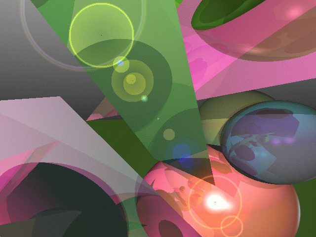
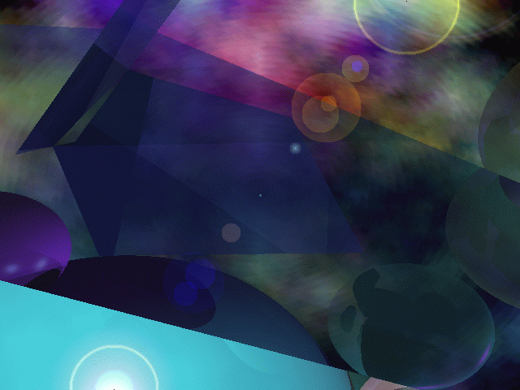

![[ TABLE OF CONTENTS ]](../gx/indexnew.gif)
![[ FRONT PAGE ]](../gx/homenew.gif)


Ever had the feeling that your CPU, able to execute floating-point calculations with lightning speed, isn't working hard enough as it idly coasts along? A new automatic ray-tracer called Raychase will remedy this situation. A Dutch programmer known as flux, who seems to be associated with a company or organization called Squashed Rabbits, has released a multi-platform "random recursive ray-tracer" which will periodically render desktop or web-page backgrounds, either tiled or full-screen. It is intended to be run continuously; on my low-end Pentium machine a new desktop background is generated every three or four minutes. Flux, when asked the question "What is the purpose of Raychase?", answered:
Create pretty & wacky pictures - arty farty stuff - eye candy - you name it - sorta ...
Installation of Raychase consists of nothing more than unpacking the tar.gz archives (there are two, one containing datafiles and the other binaries) in a convenient location. Two executables are included, an optimized fast-running one called raychase.fast and a slower debugging version, raychase.debug which will output copious messages to the console while it is running.
Raychase makes use of a variety of pigment settings, graphic filters, and
preset templates which are chosen randomly for each successive image. These
generated images aren't completely random, though. They remind me of images
from science fiction movies; shaded spheres, lens-flares, and odd textures
abound. They could be called geometric abstractions. Here is a typical
rendering:

and here is another:

Raychase's behavior is controlled with command-line options. The command
raychase.fast -e
will generate fullscreen desktop backgrounds, while the command
raychase.fast -e -x64 -y64
will tile the desktop background with 64x64 tiled images. Naturally the
smaller images render faster; a background which changes every few seconds
would be distracting, but running Raychase this way for a while will provide a
demonstration of the different types of images. It's also possible to run
Raychase without a display, with the images saved to PPM files. As an
example, this command will save 640x480 images to the /tmp
directory:
raychase.fast -x640 -y480 -d -s /tmp/%04d.ppm
A command such as this could be used to save files to a cgi-bin directory where they could be used as a source of periodically changing web-page backgrounds.
You don't have to run Raychase randomly. There are command-line options which allow you to specify the filters and pigments. Even the faster binary outputs a certain amount of status information to the console, so the variables randomly chosen to generate a particular image are accessible and could be re-used as command parameters.
The current home site, from which binaries and data-archives can be obtained for a variety of operating systems (including both libc5 and glibc flavors of Linux) is this web-page. Raychase at this time is a binary-only application, but there is a chance that at least a portion of the source-code will be released in the future.